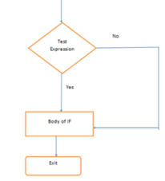
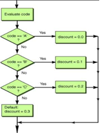
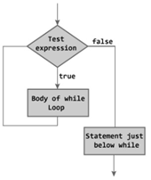
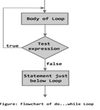
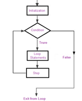

•The statements inside your source files are generally executed from top to bottom, in the order that they appear.
• Control flow statements, however, break up the flow of execution by employing decision making, looping, and branching, enabling your program to conditionally execute particular blocks of code.
• This section describes the decision-making statements (if, else, switch), the looping statements (for, while, do-while), and the branching statements (break, continue, return) supported by the programming languages.
•The if-then statement is the most basic of all the control flow statements. It tells your program to execute a certain section of code only if a particular test evaluates to true.

•The if-then-else statement provides a secondary path of execution when an "if" clause evaluates to false.
•Unlike if-then and if-then-else statements, the switch statement can have a number of possible execution paths. A switch works with the byte, short, char, and int primitive data types

•The while statement continually executes a block of statements while a particular condition is true. Its syntax can be expressed as:
while (expression) {
statement(s)
}

•The difference between do-while and while is that do-while evaluates its expression at the bottom of the loop instead of the top. Therefore, the statements within the do block are always executed at least once
do {
statement(s)
} while (expression);

The for statement provides a compact way to iterate over a range of values. Programmers often refer to it as the "for loop" because of the way in which it repeatedly loops until a particular condition is satisfied. The general form of the for statement can be expressed as follows:
for (initialization; termination;
increment) {
statement(s)
}
